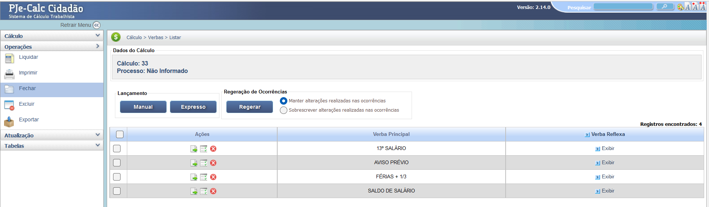

Manual Interativo de Cálculos Trabalhistas
Um guia completo e interativo para entender os cálculos na esfera judicial trabalhista.
Funcionalidade Fechar Cálculo
A opção "Fechar", localizada no menu lateral esquerdo (dentro de "Operações"), tem a função de encerrar a edição do cálculo atual e retornar à tela inicial do sistema. É um passo importante para garantir que os dados lançados sejam devidamente salvos e para preparar o sistema para a abertura de um novo cálculo.
1. Fechando o Cálculo e Voltando à Tela de Verbas
Ao clicar em "Fechar" no menu, o sistema geralmente retorna à última tela de edição do cálculo, que é a tela de listagem de Verbas. Neste ponto, é importante garantir que todas as alterações nas verbas e ocorrências tenham sido salvas.
2. Regeração de Ocorrências
Antes de finalizar, verifique a seção Regeração de Ocorrências. Se houver dúvida sobre a integridade dos dados, é recomendado clicar em "Regerar" escolhendo a opção "Sobrescrever alterações realizadas nas ocorrências". Se tiver certeza das alterações manuais, escolha "Manter alterações realizadas nas ocorrências".
3. Retorno à Tela Inicial
Após garantir que tudo foi salvo e, se necessário, regerado, clique em "Retornar Menu" (no canto superior esquerdo) ou feche a aba. Ao reabrir o sistema, ou após o fechamento completo, a tela inicial será exibida, permitindo Criar Novo Cálculo, Buscar Cálculo ou Importar Cálculo.
É fundamental Liquidar e Imprimir o cálculo antes de fechar para gerar o PDF final com os resultados.